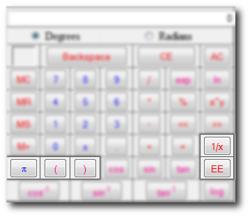

The rest of the button functions of the Scientific Calculator fall into this category.After you read this you will be scott free and on your way to being a calculator expert!!!

π which is known as pi in the equation Display is = 3.141592653589793...
It is a greek constant for finding properties of circles such as the area and circumference.
The ( and ) buttons insert left and right parenthensis into the equation.
1/x flips the equation by dividing it into 1.
EE is the same thing as x10x for example 1x103=1e3=1000. It is NOT an exponential (exp,ex).